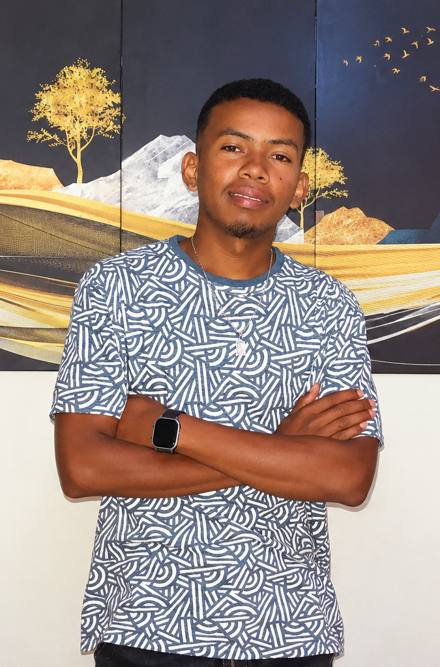

Creativity Meets Technology
Donatien Rakotozandry, designer graphique autodidacte et créateur numérique
Je transforme les idées en créations visuelles et en solutions numériques, entre design graphique, communication digitale et intelligence artificielle.
- Design graphique
- Communication digitale
- Intelligence artificielle

À propos
Créer avec passion
Je suis un jeune créatif de Fianarantsoa. Le design graphique m’a appris à regarder, composer et raconter avec des images, et j’aime en faire des identités simples et reconnaissables.
Apprendre sans m’arrêter
Formé en informatique, je me suis initié seul au design graphique depuis 2023, puis à l’intelligence artificielle avec l’attestation « Maîtriser Claude » (2026).
Collaborer
Je cherche des entreprises, commerçants et clients avec qui progresser sur des projets réels, avec sérieux et curiosité.
En bref
- Malgache courant, français et anglais niveau moyen
- Autonomie, adaptabilité, esprit de recherche
- Dessin, peinture, lecture
Compétences
Chaque compétence indique où j’en suis réellement.
Design graphique
Logos, identité visuelle, affiches, flyers et visuels pour les réseaux sociaux. Bases en Photoshop et Illustrator, retouche photo.
Communication digitale
Publications et textes publicitaires pour Facebook, présentation de produits, échanges avec les clients.
Informatique et outils
Word et Excel, développement d’applications Intranet et Internet (Bacc+2), notions de collecte de données. Adobe XD et PixelLab en découverte.
Intelligence artificielle
Usage de Claude et des assistants IA, création de prompts, recherche assistée. IA générative et automatisation en apprentissage.
Parcours
- 2020
Baccalauréat série C
Collège Fo Masin’i Jesoa, Talatamaty, Fianarantsoa.
- 2021–2023
EMIT Fianarantsoa
Informatique, développement d’applications Intranet et Internet (Bacc+2).
- Stage de 2 mois
Secrétariat d’état civil
Découverte d’un service administratif et participation aux tâches confiées.
- Depuis 2023
Design graphique en autodidacte
Logos, affiches, visuels pour les réseaux sociaux, projets personnels.
- Novembre 2026
Attestation « Maîtriser Claude »
VITAKO.mg, 11 heures, 85/100.
Portfolio
Certifications
Maîtriser Claude
- Organisme
- VITAKO.mg
- Durée
- 11 heures
- Résultat
- 85/100
- Date
- 11 novembre 2026
- Référence
- VTK-2026-4FADD0
Discutons de votre projet
Un logo, des visuels, une page à animer : écrivez-moi, je réponds avec plaisir.